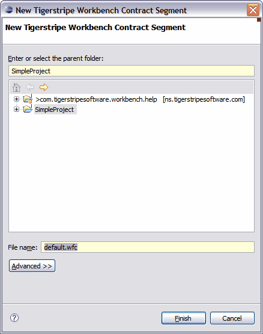
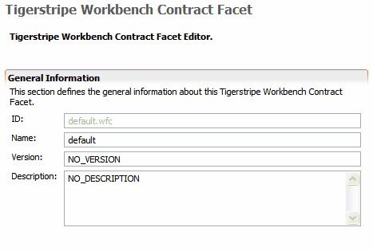

Service Contract Facet
Service Contract Facets define the scope within a Tigerstripe project. This scope allows you to highlight and enforce design features on your Service Contracts. Consequently, you can generate each facet separately for a contract. When designing Service Contracts, you may want to enforce similarities between your contracts independently of the actual subject of the Service Contract. For example, a monitoring facet and a logging facet may included information that is similar and could be used in different Service Contracts.
Defining a Service Contract Facet
To define a Service Contract Facet:
- In Tigerstripe Workbench, select File, click New, and select Contract Facet. The New Tigerstripe Workbench Contract Segment dialog box opens
Alternatively, you can right-click on the project descriptor in the Tigerstripe Explorer, click New and select Contract Facet.

- Enter a filename in the File name text box and click Finish. Facets are stored with the extension of .wfc. The new Service Contract Facet displays in the Tigerstripe Explorer.
- If it's not already selected, select the facet to open it and click the Overview tab.

- Enter a name for your facet in the Name text box.
- Enter a version number for your facet in the Version text box.
- Enter a short description of your facet in the Description text box.
- Click Save to save your changes.
Related Topics
-->Defining the Facet Scope
Defining an Active Facet
Project Generation with Active Facets
Defining Facets for Tigerstripe Projects
Merging Facets for Generation
 Defining the Facet Scope
Defining the Facet Scope
© copyright 2005, 2006, 2007 Cisco Systems, Inc. - All rights reserved